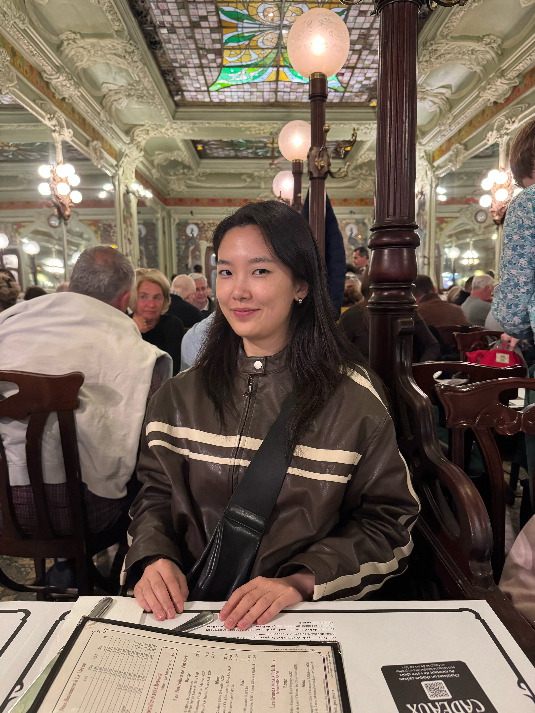

I am a Ph.D. student in Finance at Columbia Business School. Prior to my Ph.D., I received my Master's degree from MIT Sloan and worked in the finance industry.
My research interests are financial intermediation, firm innovation, and credit markets.
Email: sw3702@columbia.edu
I document that monetary policy exerts heterogeneous impacts on firm innovation efforts, and could contribute to market and R&D concentration. Controlling for financial constraints and various firm-level characteristics, a 100 basis point rate hike leads firms with 1% higher existing patent values (innovative firms) to reduce their R&D spending by 4% less than firms without patent values (non-innovative firms). This 4% gap slightly narrows but remains significant at 2.2% level after 12 quarters. Frontier firms---those generating the highest patent values within their sector---even increase their R&D spending by 2.2%, while their peers cut back R&D by 7.1% one quarter after the tightening shock, resulting in a clear divergence in R&D responses. Their sustained R&D activity is financed through additional equity issuance following the tightening. This divergence primarily stems from innovative firms' high marginal value of R&D investment. Additionally, innovative firms are particularly sensitive to R&D cuts, as such reductions may signal them as being non-innovative. When monetary policy raises interest rates, less innovative firms tend to adopt existing technologies due to higher marginal costs, whereas innovative firms persist in developing new ideas. Such monetary tightening further exacerbates the divergence, potentially widening the innovation gap in the future.
Private credit has grown to over $1.5 trillion in assets, yet little is known about which lenders ``survive'' (building lasting presence) and why. We document a striking lifecycle pattern: many entrants exit quickly, and these short-lived ``Leavers'' account for much of the observed private credit pricing premium. Prior private equity experience is the key predictor of persistence. Lenders with PE backgrounds are more than three times as likely to remain active, exhibit substantially lower exit hazards, and charge spreads comparable to traditional banks. In contrast, lenders without PE experience enter with higher spreads, originate smaller deals, and disproportionately exit. Our findings suggest that cross-market expertise—rather than pure risk specialization—drives sustainable participation in private credit, reshaping how we interpret its risk and growth.
I document that the relationship between bank and nonbank credit is state-contingent. Using From-Whom-to-Whom data from the Federal Reserve (1980-2025), I show that nonbank credit substitutes bank credit during expansions, but complements it during downturns, when both shrink simultaneously. At the same time, the correlation between bank and nonbank credit growth has declined secularly, while their funding flows have become more correlated. This divergence points to an asymmetric cross-funding channel: nonbank funding inflows crowd out bank credit, whereas bank funding inflows boost nonbank credit. The asymmetry is stronger in expansions, making the bank-nonbank credit relationship inherently state-dependent.
A small corner for sharing some of the films and books I love — they helped me learn more about the world.